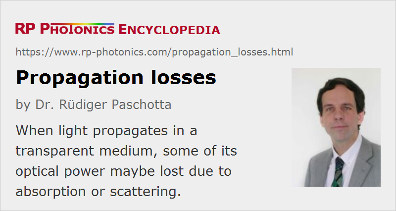

Propagation Losses
Definition: losses of optical energy during propagation of light
More specific terms: bend losses, depolarization loss, insertion loss, return loss, photoinduced losses
German: Ausbreitungsverluste, Propagationsverluste
Categories: general optics, physical foundations
How to cite the article; suggest additional literature
Author: Dr. Rüdiger Paschotta
When light propagates in a transparent medium, some of its optical power may be lost due to different physical effects:
- Some of the light may be absorbed. The corresponding energy will often be converted into heat, but it may also lead to fluorescence at other optical wavelengths.
- Light can also be scattered (often in the form of Rayleigh scattering), i.e., it is sent to other directions. Although that does not reduce the total amount of light, it reduces the amount which propagates along the original path. Therefore, scattered light is usually considered to be lost. In some situations, however, a significant part of the scattered light may be sent to approximately the original propagation direction by multiple scattering. It may then be more difficult to appropriately define a propagation loss coefficient.
- In some situations, there are losses due to nonlinear frequency conversion; for example, energy may be transferred to a wave with twice the optical frequency (→ frequency doubling).
- For light propagation in waveguides (e.g. optical fibers), there can be losses due to mode coupling between guided and unguided modes. (Power transferred into unguided modes is usually considered as lost.) For example, they can be caused by strong bending (→ bend losses).
With propagation losses, one usually means only those losses which are distributed in the medium – not localized losses, such as those arising from Fresnel reflections at optical interfaces.
In some situations, propagation losses may be compensated or over-compensated by gain e.g. in a laser gain medium or by nonlinear effects (e.g. optical parametric amplification).
Loss Coefficients
The propagation losses in a medium can be quantified with a propagation loss coefficient α, which is the sum of contributions from absorption and scattering and has units of m−1. If the loss coefficient is constant, the optical power is proportional to exp(−α z) where z is the propagation distance.
Alternatively, the losses can be quantified in decibels per meter (dB/m); the numerical values are then ≈4.34 times higher than those of the loss coefficient in m−1. It is also possible to describe propagation losses with a complex refractive index, where the losses are expressed in the imaginary part. Similarly, the evolution power and optical phase can be described with a complex propagation constant.
Intrinsic and Extrinsic losses
Propagation losses are called intrinsic when they inevitably arise from the basic properties of the material. On the other hand, extrinsic losses are those which arise from circumstances which can in principle be avoided.
For example, silica fibers exhibit some intrinsic losses due to infrared absorption and also due to Rayleigh scattering at unavoidable inhomogeneities of the glass. (Note that a glass, having an amorphous structure, can never be completely optically homogeneous, even for perfectly optimized fabrication conditions.) On the other hand, there can be additional extrinsic losses due to impurities or non-perfect fabrication conditions.
Dependencies
The propagation loss coefficient is generally wavelength-dependent. In case of a waveguide, it can also be strongly mode-dependent.
Generally, propagation losses in waveguides are larger than those in homogeneous media, mostly because non-perfect interfaces can lead to increased scattering. However, optimized single-mode fibers (used e.g. as telecom fibers) can have losses below 0.2 dB/km in the 1.5-μm spectral region, because highly purified silica (even when doped e.g. with germania) exhibits very little absorption and scattering in that wavelength region.
For low enough optical intensities, the propagation loss is independent of the intensity. For higher intensities, optical nonlinearities can come into play. For example, the propagation loss may be increased by two-photon absorption or by nonlinear frequency conversion as mentioned above.
Questions and Comments from Users
Here you can submit questions and comments. As far as they get accepted by the author, they will appear above this paragraph together with the author’s answer. The author will decide on acceptance based on certain criteria. Essentially, the issue must be of sufficiently broad interest.
Please do not enter personal data here; we would otherwise delete it soon. (See also our privacy declaration.) If you wish to receive personal feedback or consultancy from the author, please contact him e.g. via e-mail.
By submitting the information, you give your consent to the potential publication of your inputs on our website according to our rules. (If you later retract your consent, we will delete those inputs.) As your inputs are first reviewed by the author, they may be published with some delay.
See also: propagation constant, absorption coefficient, scattering
and other articles in the categories general optics, physical foundations
|  |
If you like this page, please share the link with your friends and colleagues, e.g. via social media:
These sharing buttons are implemented in a privacy-friendly way!